Long Short-term Memory#
Michael J. Pyrcz, Professor, The University of Texas at Austin
Twitter | GitHub | Website | GoogleScholar | Geostatistics Book | YouTube | Applied Geostats in Python e-book | Applied Machine Learning in Python e-book | LinkedIn
Chapter of e-book “Applied Machine Learning in Python: a Hands-on Guide with Code”.
Cite this e-Book as:
Pyrcz, M.J., 2024, Applied Machine Learning in Python: A Hands-on Guide with Code [e-book]. Zenodo. doi:10.5281/zenodo.15169139 
The workflows in this book and more are available here:
Cite the MachineLearningDemos GitHub Repository as:
Pyrcz, M.J., 2024, MachineLearningDemos: Python Machine Learning Demonstration Workflows Repository (0.0.3) [Software]. Zenodo. DOI: 10.5281/zenodo.13835312. GitHub repository: GeostatsGuy/MachineLearningDemos 
By Michael J. Pyrcz
© Copyright 2024.
This chapter is a tutorial for / demonstration of Long Short-term Memory.
YouTube Lecture: check out my lectures on:
These lectures are all part of my Machine Learning Course on YouTube with linked well-documented Python workflows and interactive dashboards. My goal is to share accessible, actionable, and repeatable educational content. If you want to know about my motivation, check out Michael’s Story.
Motivation#
Recurrent neural networks are very powerful, but they lack long-term memory required to solve many complicated problems. Long Short-term Memory networks address this challenge the addition of a long-term memory channel.
For other artificial neural networks also known as deep learning methods, see,
Long short-term memory networks, are nature inspired computing is looking to nature for inspiration to develop novel problem-solving methods,
artificial neural networks are inspired by biological neural networks
nodes - in our model are artificial neurons, simple processors
connections between nodes are artificial synapses
intelligence emerges from many connected simple processors. For the remainder of this chapter, I will used the terms nodes and connections to describe our artificial neural network.
Now let’s recall and highlight,
artificial neural networks
feed-forward and feedback networks
definition of recursion
from artificial neural networks to long short-term memory networks,
Artificial Neural Networks#
If you have not, take this opportunity to review my previous chapters in the e-book on, Artificial Neural Networks.
The main takeaways from my artificial neural network chapter are as follows,
architecture of a neural network, including its fundamental components, nodes (neurons) and the weighted connections between them.
forward pass computation through the network, where each node computes a weighted sum of its inputs (including a bias term), followed by the application of a nonlinear activation function.
computation of the error derivative, which is then backpropagated through the network via the chain rule to determine the gradients of the loss function with respect to each weight and bias.
aggregation of these gradients across all samples in a training batch, typically by averaging, to update the model parameters.
iterative training process, where the model is trained over multiple batches and epochs (passes over all the data) to continually refine the weights and biases until the model achieves an acceptable error rate on the test data.
The main takeaways from my convolutional neural network chapter are as follows,
regularization of image data with receptive fields to preserve spatial information and to avoid overfit.
convolutional kernels with learnable weights to extraction information from images.
For both of these chapters, I have included links to my recorded lectures and to neural networks built from scratch with NumPy only!
Feed-forward and Feedback Networks#
A critical aspect of the Artificial Neural Networks is that the network is fully connected, feed-forward.
with a recurrent neural network, information can flow backwards.
Heres an illustration of both,

Feed-forward – information from predictor feature to response is combined and compressed to map to predict the response feature.
Feedback – connections that take information to earlier layers or into the same layer in a later step
Definition of Recursion#
Recursive neural networks are built upon the concept of recusion. Let’s start by defining recursion,
From Oxford English Dictionary,
Recursion - “the repeated application of a recursive procedure or definition”
Recursion is a recursive procedure, is a recursive procedure, is a recursive procedure, …
From Wikipedia,
Recursion - “recursion occurs when the definition of a concept or process depends on a simpler or previous version of itself”
Philosophically speaking we can describe recursion as,
a complicated system built by repeated application of a simple step.
Let’s take a simple mathematical operator that is solved with recursion, the factorial.
Here’s a function that could be written in Python to solve any factorial of an integer,
def factorial(n):
if n == 0 or n == 1:
return 1:
else:
return n * factorial(n-1)
Did you see it? The function calls itself, this is recursion in programming. Now let’s introduce recursion in a neural network.
Recurrent Connections#
The previous ANN ignores information from the adjacent prediction case. The recursive neural network (RNN), make the predictions in order and share information, add memory to our network!
Make the predictions in order and share information, add memory to our network!

Here’s the new equation for the pre-activation result in the hidden layer node,

As we will see, recurrent connections allows information to flow backwards from the preivous prediction(s) to the current prediction, resulting in memory,
to improve predictions for series data
yet, this memory attenuates quickly over predictions over a series of data, i.e., only provides short-term memory
Let’s define series data next.
Series Data#
A sequence of observations collected over ordered intervals, typically through time but sometimes through space or another ordered dimension. Example include,
Time series data - by-second stock prices in financial markets, monthly rainfall measured at a weather station in meterology
Spatial series data - mineral grades along a borehole in depth or a oil production from a well over time in geoscience
Sequential process data - rate of failure of product from an assembly line
Here’s a simple bivariate, sparial series dataset with porosity and permeability measured at regular intervals of a well based on extracted core data.

We could build a prediction model that predicts permeability from porosity at each depth separately.
this may ignore important information / data structures between the locations in the series.

Now we are ready to introduce short long-term memory (LSTM) networks.
Short-Term and Long-term Memory Networks#
Consider this data set. We need to predict a sequence of permeability (response feature) matched to a sequence of porosity (predictor feature).
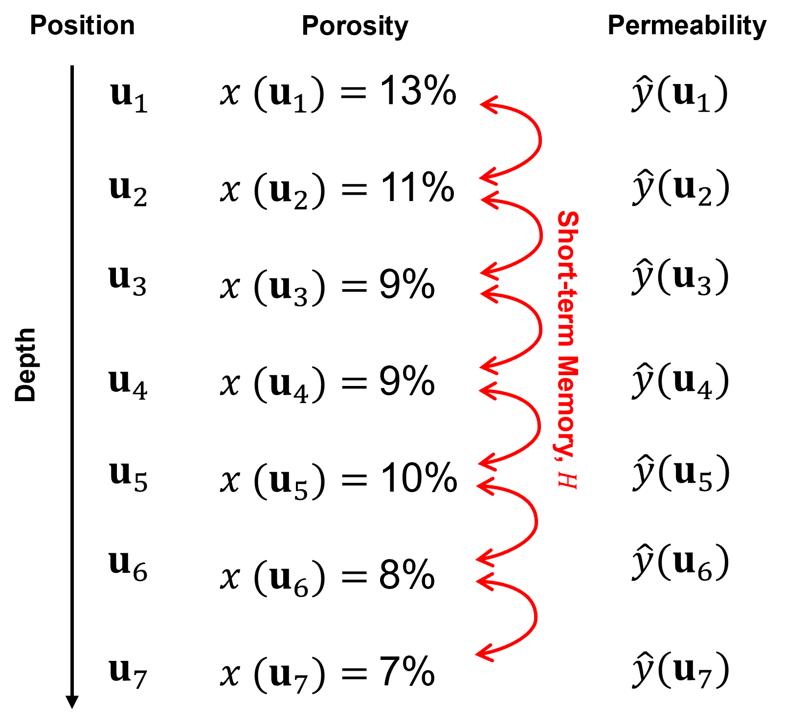
The data is sorted by depth along a single well; therefore, this is a correlated sequence,
information is shared between adjacent predictor and response feature values
the relationship between predictor and response feature values may change based on the context, for example adjacent predictor feature values and the associated predictions
To model this context,
predictions are made sequentially - prediction should use information from previous predictions
Recurrent neural networks did this (see the previous Recurrent Neural Network chapter). Yet, there remains an important question?
how much information from the prediction at location \(\bf{u}_1\) will remain to inform the prediction at location \(\bf{u}_7\)?
In general, the answer is very little,
while the recurrent connection from the prediction at location \(\bf{u}_1\) is input into the hidden layer for the prediction at location, \(\bf{u}_2\), and so on, this information is rapidly attenuated over recurrent predictions along the sequence, i.e., the recurrent connections of recurrent neural networks only provide short-term memory to the network.
The solution to long-term memory learning is a new long-term memory pipe.
this pipe runs in parallel with the short-term memory pipe.
information in the long-term memory pipe is updated at a controlled rate by a trainable gate based on context
information passed from the long-term memory pipe is passed to each prediction by a trainable gate based on context
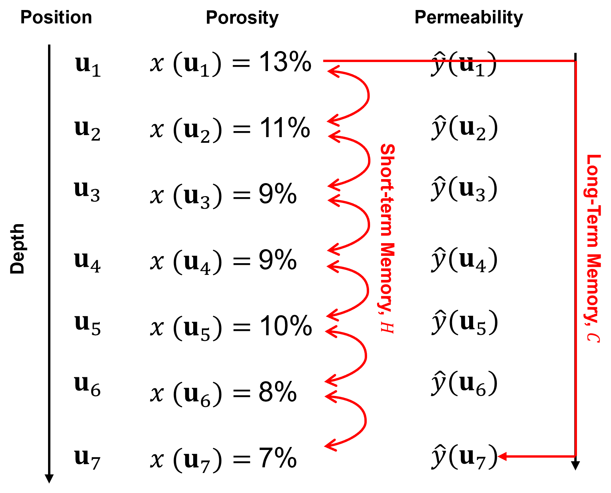
Before we go any further, let’s carefully lay out the elements of memory.
Elements of Memory#
Now we can offer a refined definition of memory that map to our LSTM network, including the concepts,
information
retention
influence
Information - from the past
something happened or was observed previously.
Retention - past information is retained
the information persists after the original event or observation is gone.
Influence - impact on future decisions
the retained information can affect a future decision, prediction, or action.
Networks that have long-term memory as nature inspired computing. There are many evolutionary examples of life developing exceptional long-term memory to benefit from retained information from the distant past that can influence future behavior.
consider the Clark’s nutcracker as an example.
Now we can itemize the elements of memory,
Persistent information storage - information must be retained from one time step to the next.
Mechanism to remove or replace information - discard information that is no longer useful; otherwise, memory simply accumulates.
Mechanism to add new information - incorporate new information as it is observed.
Mechanism to extract information as new information - distill information from the current input and previous predictions
Mechanism to access and expose stored information - make relevant stored information available to the rest of the system.
Long and Short-term Memory Networks#
First, let’s zoom out and define the LSTM unit and then walk thorugh all the details,
information flow / connections
trainable weights and biases
First, we define the LSTM unit as a box, between the predictor feature(s) over a series,
and response feature predictions over the same series,
and inside the box there is short-term memory via the recurrent connections pipe, \(h\), and long-term memory pipe, \(C\),
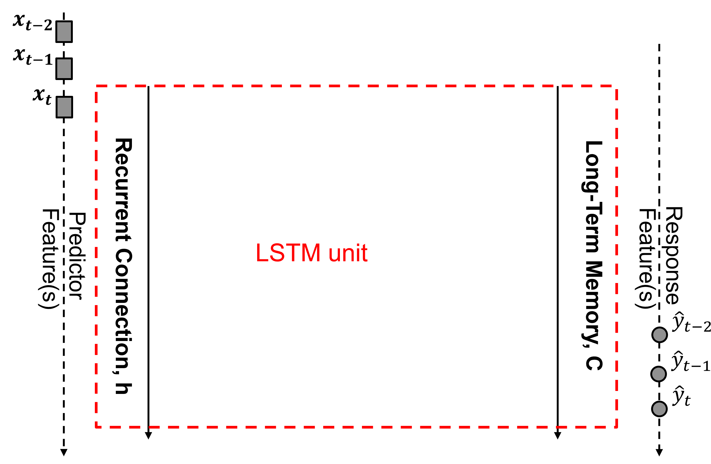
This is a useful abstraction based on only the essential components of this system. Now let’s go in the box and build the LSTM unit, step by step, for the case of,
a prediction at index \(t\) in the series
using information through memory of previous predictions at index \(t-1\), \(t-2\), \(\ldots\)
For the purpose of this demonstration we assume the following simplifying assumptions for clarity and conciseness,
1 predictor feature
long-term memory vector, \(C\), of length 1
The LSTM demonstrated here could be extended to,
any number of predictor features
long-term memory vector, \(C\), of commonly used lengths, 32, 64, 128 or 256
Also, while are demonstration is spatial over 1D, we will use time instead of location or consistently stating time or location since,
temporal predictions are are common application of LSTMs and we will retain consistency with most LSTM explainations and definitions of terms.
time is depth along our well logs
Long-term and Short-term Pipes#
Start with long-term memory, \(c_(t-1)\), short-term memory, \(h_(t-1)\), and current predictor feature, \(x_2\), and calculate the updated long-term memory, \(c_t\), updated short-term memory, \(h_t\), and prediction of \(y_2\).
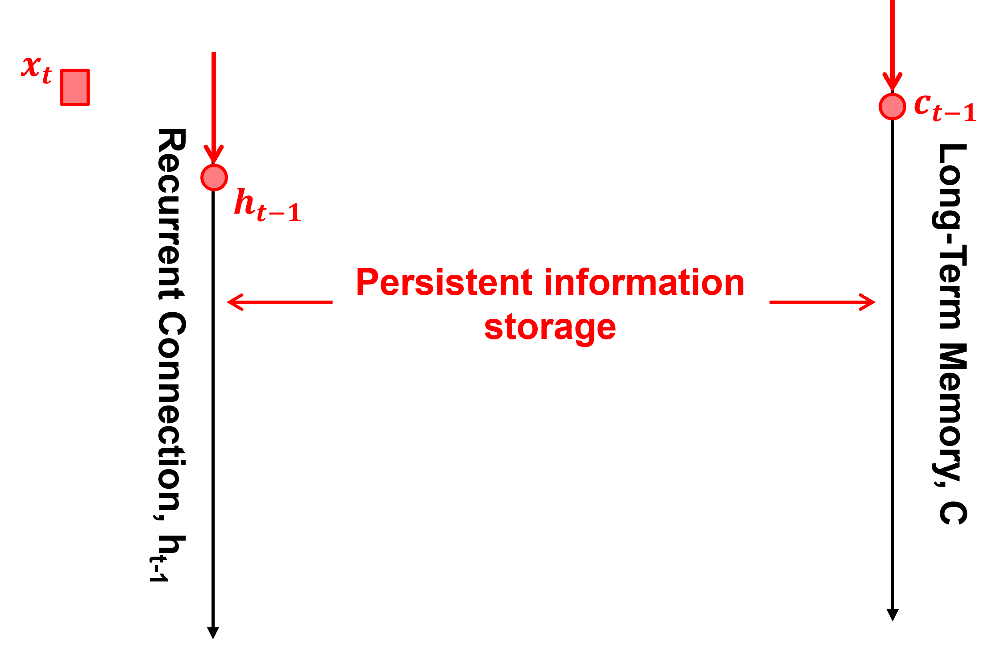
Forget Gate#
How much long-term memory, \(C\), should we retain? The forget gate is neural node, i.e., linear weighted and nonlinear activated combination of,
\(x_t\) - current (\(t\)) predictor feature value
\(h_(t−1)\) - short-term memory, the reccurent connection to the previous prediction at \(t-1\) hidden layer output, short
Let’s now add the forget gate into our LSTM unit.
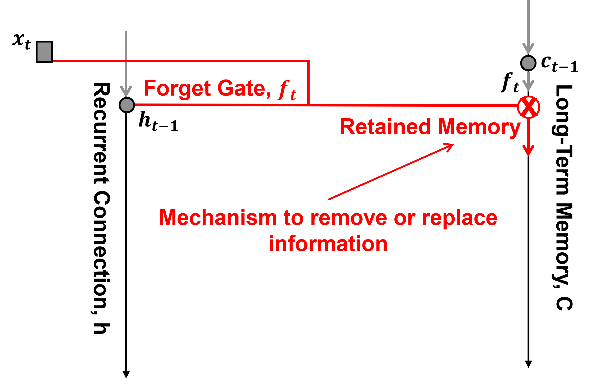
The role of the LSTM is to determine,
The forget gate node is a standard neural node, trainable linear weighting of the two inputs and nonlinear activation.
The LSTM forget gate strength, \(f_t\), is defined as:
where:
\(\alpha_{(f,t)}\) is the linear combination of inputs used to calculate the forget gate pre-activation at time \(t\).
\(\lambda_{(x,f)}\) is the trainable weight connecting the input predictor feature value at time \(t\) to the forget gate.
\(x_t\) is the input predictor feature at time \(t\).
\(\lambda_{(h,f)}\) is the recurrent weight connecting the previous hidden state to the forget gate.
\(h_{t-1}\) is the hidden state (output of the hidden layer) from the previous time step.
\(b_f\) is the bias for the forget gate.
\(f_t\) is the forget gate activation at time \(t\), with values between 0 and 1.
\(\sigma(\cdot)\) is the sigmoid activation function, which determines the proportion of the previous cell state retained by the forget gate.
Input Gate#
How much new information, \(h_{t-1}\) should be written? The input gate is neural node, i.e., linear weighted and nonlinear activated combination of,
\(x_t\) - current (\(t\)) predictor feature value
\(h_(t−1)\) - short-term memory, the reccurent connection to the previous prediction at \(t-1\) hidden layer output, short
Let’s now add the input gate into our LSTM unit.
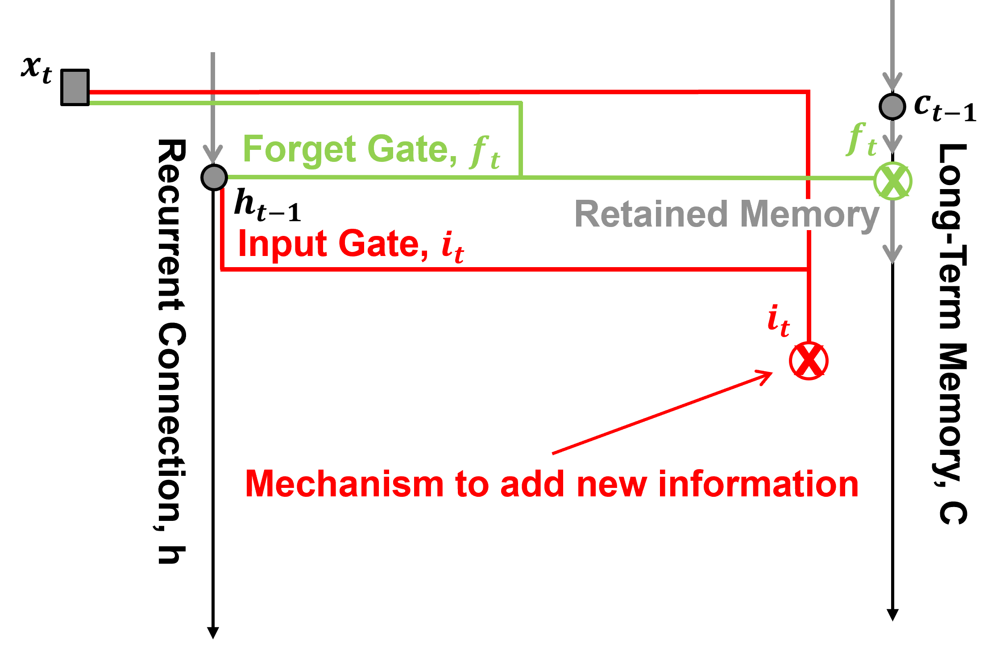
The input gate node is a standard neural node, trainable linear weighting of the two inputs and nonlinear activation.
The LSTM input gate strength \(i_t\) is defined as:
where:
\(\alpha_{(i,t)}\) is the linear combination of inputs used to calculate the input gate pre-activation at time \(t\).
\(\lambda_{(x,i)}\) is the trainable weight connecting the input predictor feature value at time \(t\) to the input gate.
\(x_t\) is the input predictor feature at time \(t\).
\(\lambda_{(h,i)}\) is the recurrent weight connecting the previous hidden state to the input gate.
\(h_{t-1}\) is the hidden state (output of the hidden layer) from the previous time step.
\(b_i\) is the bias for the input gate.
\(i_t\) is the input gate activation at time \(t\), with values between 0 and 1.
\(\sigma(\cdot)\) is the sigmoid activation function, which controls how much of the candidate cell-state information is incorporated into the cell state.
New Information#
What new information, \(\tilde{c}_t\), should be written? The input gate is neural node, i.e., linear weighted and nonlinear activated combination of,
\(x_t\) - current (\(t\)) predictor feature value
\(h_(t−1)\) - short-term memory, the reccurent connection to the previous prediction at \(t-1\) hidden layer output, short
Let’s now add the new information into our LSTM unit.
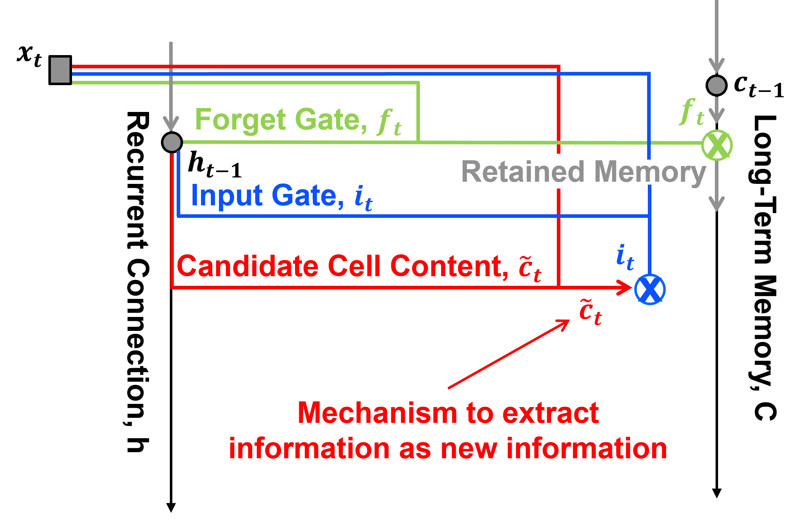
New information, also known as the candidate cell content, \(\tilde{c}_t\), is a combination of input and hidden state as,
where:
\(\alpha_{(c,t)}\) is the linear combination of inputs used to calculate the candidate cell-state pre-activation at time \(t\).
\(\lambda_{(x,c)}\) is the trainable weight connecting the input predictor feature value at time \(t\) to the candidate cell state.
\(x_t\) is the input predictor feature at time \(t\).
\(\lambda_{(h,c)}\) is the recurrent weight connecting the previous hidden state to the candidate cell state.
\(h_{t-1}\) is the hidden state (output of the hidden layer) from the previous time step.
\(b_c\) is the bias for the candidate cell state.
\(\tilde{c}_t\) is the candidate cell-state value at time \(t\), representing new information that could be incorporated into the cell state, with values between \(-1\) and \(1\).
\(\tanh(\cdot)\) is the hyperbolic tangent activation function, which maps the pre-activation to values between \(-1\) and \(1\).
Updated Memory#
What is the updated long-term memory? The weighted combination of retained memory, \(\tilde{c}_{t-1}\) and new information, new memory, \(\tilde{c}_t\).
Let’s now add the updated information into our LSTM unit.
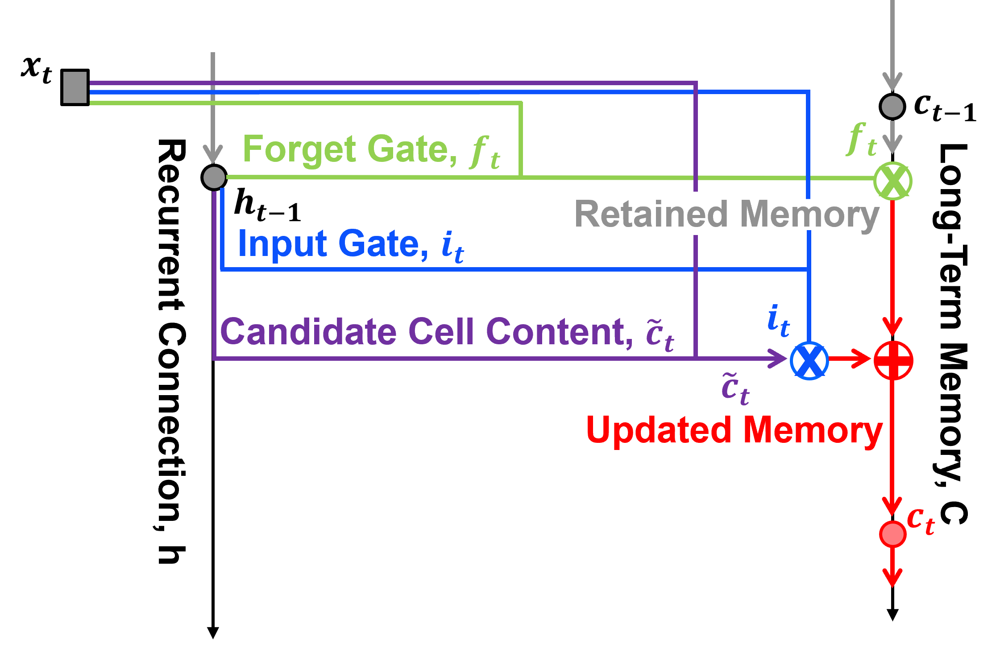
Updated long-term memory, \(c_t\), at time step \(t\) is a combination of retained memory and new memory.
where:
\(c_t\) is the cell state (long-term memory) at time step \(t\).
\(f_t\) is the forget gate.
\(c_{t-1}\) is the cell state (long-term memory) from the previous time step.
\(i_t\) is the input gate.
\(\tilde{c}_t\) is the candidate cell state, representing new information.
\(f_t \otimes c_{t-1}\) is the retained memory contribution.
\(i_t \otimes \tilde{c}_t\) is the new memory contribution.
\(\otimes\) denotes element-wise multiplication.
\(\oplus\) denotes the combination (addition) of the retained and new memory contributions.
Note: \(\otimes\) denotes element-wise multiplication (gating), and \(\oplus\) denotes addition (combination).
Output Gate#
How much of the updated long-term memory, \(c_t\), should be output to short term memory, \(h_t\)? The output gate is neural node, i.e., linear weighted and nonlinear activated combination of,
\(x_t\) - current (\(t\)) predictor feature value
\(h_(t−1)\) - short-term memory, the reccurent connection to the previous prediction at \(t-1\) hidden layer output, short
Let’s now add the output gate into our LSTM unit.
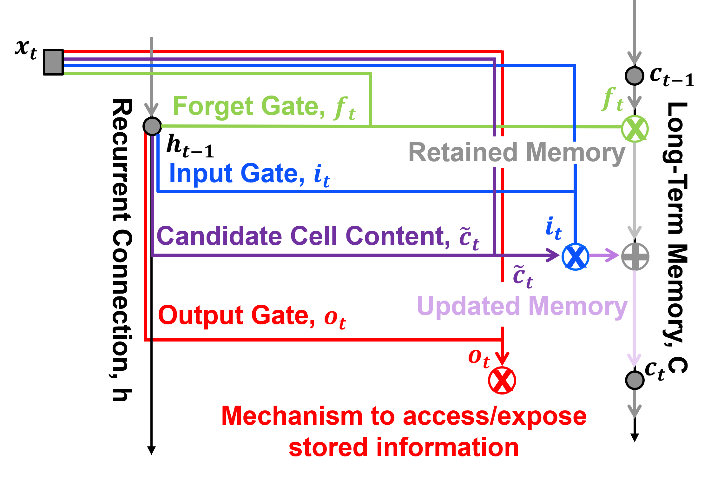
The input gate node is a standard neural node, trainable linear weighting of the two inputs and nonlinear activation.
The LSTM output gate strength \(i_t\) is defined as:
where:
\(\alpha_{(o,t)}\) is the linear combination of inputs used to calculate the output gate pre-activation at time \(t\).
\(x_t\) is the input predictor feature at time \(t\).
\(h_{t-1}\) is the hidden state (output of the hidden layer), representing short-term memory, from the previous time step.
\(\lambda_{(x,o)}\) is the trainable weight connecting \(x_t\) to the output gate.
\(\lambda_{(h,o)}\) is the recurrent weight connecting \(h_{t-1}\) to the output gate.
\(b_o\) is the bias for the output gate.
\(o_t\) is the output gate activation at time \(t\), with values between 0 and 1.
\(\sigma(\cdot)\) is the sigmoid activation function, which controls how much of the cell-state information is exposed through the hidden state.
Prediction#
The prediction at step, \(t\), as a regular neural network output node with only the short-term memory hidden state, \(h_t\), as an input.
Let’s now add the prediction into our LSTM unit.
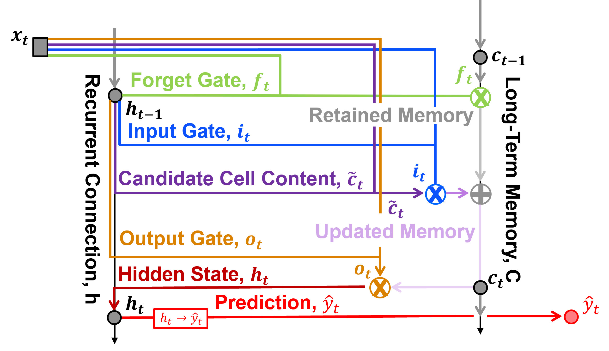
Calculate the prediction, \(\hat{y}_t\), at time step \(t\).
where:
\(\lambda_{(h,y)}\) is the trainable weight connecting the hidden state \(h_t\) to the prediction.
\(h_t\) is the hidden state (output of the hidden layer), representing short-term memory, at time step \(t\).
\(b_y\) is the bias for the prediction.
\(\hat{y}_t\) is the predicted value at time step \(t\).
That’s it! These are all the parts of a LSTM, capturing elements of memory with a long-term and short-term memory pipe.
to reinforce this structure let’s attack this from another direction, focussed on information flow through the unit
Information Flow in a LSTM Unit#
Let’s go back to the LSTM unit as a box and focus on the informaton flowing in and out at a prediction at time \(t\).
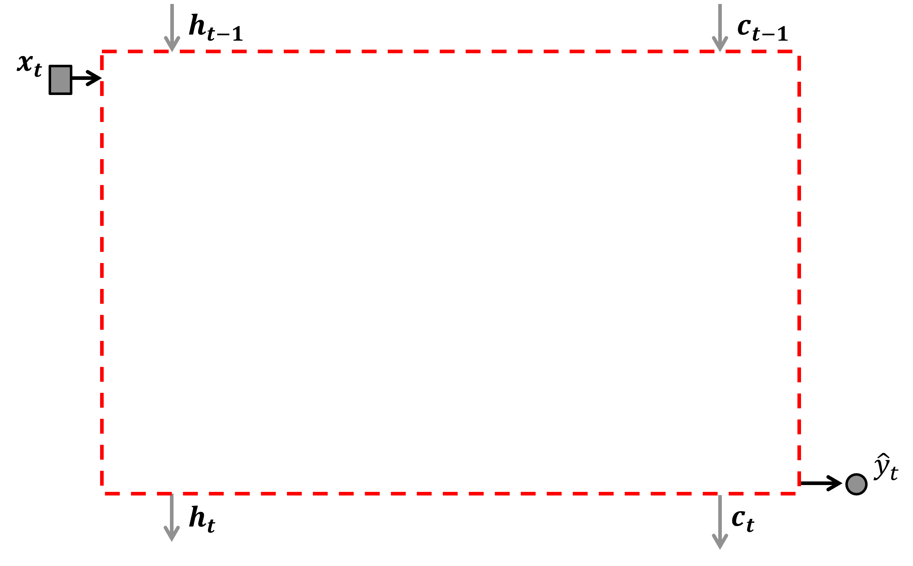
Inputs include:
\(h_{t-1}\) - hidden state (short-term memory) at time step \(t-1\).
\(c_{t-1}\) - cell state (long-term memory) at time step \(t-1\).
\(\hat{y}_{t-1}\) - prediction at time step \(t-1\).
Outputs include:
\(h_t\) - hidden state (short-term memory) at time step \(t\).
\(c_t\) - cell state (long-term memory) at time step \(t\).
\(\hat{y}_t\) - prediction at time step \(t\).
Now we can draw the information flow and gates inside the LSTM unit.
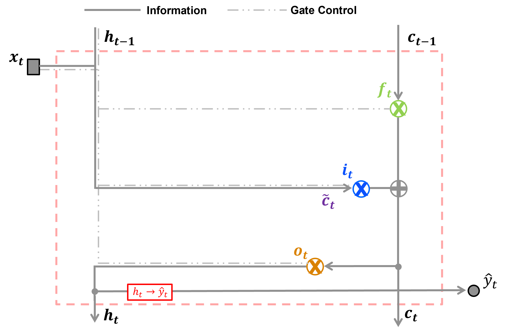
Note: \(\otimes\) is element-wise multiplication (gating), \(\oplus\) is addition (combination), and \(\boxed{\text{.}}\) represents the prediction model.
LSTM Model Parameters#
Now we can list all the trainable model parameters for our LSTM.
Component |
Data Weight |
Recurrent / Hidden-State Weight |
Bias |
|---|---|---|---|
Forget Gate |
\(\lambda_{(x,f)}\) |
\(\lambda_{(h,f)}\) |
\(b_f\) |
Input Gate |
\(\lambda_{(x,i)}\) |
\(\lambda_{(h,i)}\) |
\(b_i\) |
New Information |
\(\lambda_{(x,c)}\) |
\(\lambda_{(h,c)}\) |
\(b_c\) |
Output Gate |
\(\lambda_{(x,o)}\) |
\(\lambda_{(h,o)}\) |
\(b_o\) |
Prediction |
— |
\(\lambda_{(h,y)}\) |
\(b_y\) |
LSTM Training#
In previous chapters of this e-book I have provided,
back propogation - in the artificial neural network chapter we propagate the error gradient backwards through an artificial neural network
iterating over epochs - in the artificial neural network chapter we cover the method of iteratively optimizing neural network weights and biases
training a recurrent neural network - in the recurrent neural network chapter we cover training a recurrent neural network architectures, i.e., accounting for loss over the current and predictions over future time steps
Given all of these topics have been covered I provide only these highlights on training an LSTM.
Forward pass: at each time step, the LSTM calculates the forget, input, and output gates, updates the cell state, calculates the hidden state, and generates a prediction.
Loss calculation: Predictions are compared with observed values using a loss function, aggregated over the sequence of predictions.
Backpropagation through time (BPTT): The prediction errors are propagated backward through the sequence of predictions to calculate gradients for the trainable weights and biases throughout the LSTM.
Parameter updates: The gradients are used by an optimizer, such as stochastic gradient descent or Adam, to update the weights and biases, minimizing the loss function.
Training over multiple sequences: The forward pass, loss calculation, backpropagation, and parameter updates are repeated over training sequences and epochs until a stopping criterion is met, i.e., number of training epochs or model accuracy
Next we,
declare the basic functions for a simple LSTM
build a simple dataset
train and demonstrate our simple LSTM on this simple dataset
Import Required Packages#
We will also need some standard packages. These should have been installed with Anaconda 3.
suppress_warnings = True # toggle to supress warnings
import os # to set current working directory
import math # square root operator
import numpy as np # arrays and matrix math
import matplotlib.pyplot as plt # for plotting
import matplotlib.patches as patches # draw neural network nodes
from matplotlib.ticker import FuncFormatter
from matplotlib.ticker import (MultipleLocator, AutoMinorLocator, AutoLocator) # control of axes ticks
plt.rc('axes', axisbelow=True) # grid behind plotting elements
if suppress_warnings == True:
import warnings # supress any warnings for this demonstration
warnings.filterwarnings('ignore')
seed = 13 # random number seed for workflow repeatability
color = '#BF5700' # burnt orange
If you get a package import error, you may have to first install some of these packages. This can usually be accomplished by opening up a command window on Windows and then typing ‘python -m pip install [package-name]’. More assistance is available with the respective package docs.
Declare Functions#
Here’s the functions to make, train and visualize our recurrent neural network.
add_grid()
initialize_rnn_weights(seed=None, scale=0.5)
sigmoid(z) - sigmoid activation
sigmoid_deriv(h) - sigmoid activation derivative
forward_pass(x, params) - forward pass including recursion from previous prediction
mse_loss(y_pred, y) - loss derivative at output
backward_pass(x, y, y_pred, h2, a2, params) - backpropagate loss derivative including recursion from subsequent prediction
update_weights(params, grads, lr=0.001) - update model parameters
draw_node(ax, xy, text, color=”lightblue”) - draw network node
draw_arrow(ax, p1, p2, t) - draw network connection
def initialize_lstm_weights(seed=None, scale=0.5): # initialize weights and biases for a single-node LSTM, Returns a dictionary
rng = np.random.default_rng(seed)
params = {
"w1f": rng.uniform(-scale, scale), # input → forget gate
"w2tf": rng.uniform(-scale, scale), # hidden (t-1) → forget gate
"bf": rng.uniform(-scale, scale), # forget gate bias
"w1i": rng.uniform(-scale, scale), # input → input gate
"w2ti": rng.uniform(-scale, scale), # hidden (t-1) → input gate
"bi": rng.uniform(-scale, scale), # input gate bias
"w1c": rng.uniform(-scale, scale), # input → candidate
"w2tc": rng.uniform(-scale, scale), # hidden (t-1) → candidate
"bc": rng.uniform(-scale, scale), # candidate bias
"w1o": rng.uniform(-scale, scale), # input → output gate
"w2to": rng.uniform(-scale, scale), # hidden (t-1) → output gate
"bo": rng.uniform(-scale, scale), # output gate bias
"w23": rng.uniform(-scale, scale), # hidden → output
"b3": rng.uniform(-scale, scale), # output bias
}
return params
def sigmoid(z): # sigmoid activation
return 1.0 / (1.0 + np.exp(-z))
def sigmoid_deriv(h): # sigmoid activation derivative
return h * (1 - h)
def tanh_deriv(h): # tanh activation derivative
return 1 - h**2
def forward_pass(x, params): # forward pass through a single-node LSTM.
(w1f, w2tf, bf, w1i, w2ti, bi, w1c, w2tc, bc, w1o, w2to, bo, w23, b3) = params.values()
T = len(x)
f, i, c_tilde, o = np.zeros(T), np.zeros(T), np.zeros(T), np.zeros(T) # gates and states
a_f, a_i, a_c, a_o = np.zeros(T), np.zeros(T), np.zeros(T), np.zeros(T)
c2, h2 = np.zeros(T), np.zeros(T)
y_pred = np.zeros(T)
for t in range(T):
h_prev = 0.0 if t == 0 else h2[t-1]
c_prev = 0.0 if t == 0 else c2[t-1]
a_f[t] = w1f * x[t] + w2tf * h_prev + bf # forget gate
f[t] = sigmoid(a_f[t])
a_i[t] = w1i * x[t] + w2ti * h_prev + bi # input gate
i[t] = sigmoid(a_i[t])
a_c[t] = w1c * x[t] + w2tc * h_prev + bc # candidate memory, new information
c_tilde[t] = np.tanh(a_c[t])
c2[t] = f[t] * c_prev + i[t] * c_tilde[t] # new long-term memory
a_o[t] = w1o * x[t] + w2to * h_prev + bo # output gate
o[t] = sigmoid(a_o[t])
h2[t] = o[t] * np.tanh(c2[t]) # hidden state
y_pred[t] = w23 * h2[t] + b3 # prediction
return (y_pred,h2,c2,f,i,c_tilde,o,a_f,a_i,a_c,a_o)
def mse_loss(y_pred, y): # loss
return np.mean((y_pred - y)**2)
def backward_pass(x, y, y_pred, h2, c2, f, i, c_tilde, o, # backward pass through a single-node LSTM.
a_f, a_i, a_c, a_o, params):
(w1f, w2tf, bf, w1i, w2ti, bi, w1c, w2tc, bc, w1o, w2to, bo, w23, b3) = params.values()
T = len(x)
grads = {k: 0.0 for k in params.keys()} # initialize gradients
delta_h_next = 0.0 # gradients passed backward through time
delta_c_next = 0.0
for t in reversed(range(T)):
h_prev = 0.0 if t == 0 else h2[t-1]
c_prev = 0.0 if t == 0 else c2[t-1]
dL_dy = 2 * (y_pred[t] - y[t]) / T # loss derivative wrt y_pred[t]
grads["w23"] += dL_dy * h2[t] # output layer
grads["b3"] += dL_dy
delta_h = dL_dy * w23 + delta_h_next # gradient arriving at h_t
tanh_c = np.tanh(c2[t]) # h_t = o_t * tanh(c_t)
delta_o = delta_h * tanh_c
delta_c = delta_h * o[t] * (1 - tanh_c**2)
delta_c += delta_c_next # gradient flowing from future cell state
delta_a_o = delta_o * sigmoid_deriv(o[t]) # output gate
grads["w1o"] += delta_a_o * x[t]
grads["w2to"] += delta_a_o * h_prev
grads["bo"] += delta_a_o
# ------------------------------------------------
# cell state:
#
# c_t = f_t*c_prev + i_t*c_tilde
# ------------------------------------------------
delta_f = delta_c * c_prev # forget gate
delta_a_f = delta_f * sigmoid_deriv(f[t])
grads["w1f"] += delta_a_f * x[t]
grads["w2tf"] += delta_a_f * h_prev
grads["bf"] += delta_a_f
delta_i = delta_c * c_tilde[t] # input gate
delta_a_i = delta_i * sigmoid_deriv(i[t])
grads["w1i"] += delta_a_i * x[t]
grads["w2ti"] += delta_a_i * h_prev
grads["bi"] += delta_a_i
delta_c_tilde = delta_c * i[t] # candidate
delta_a_c = delta_c_tilde * tanh_deriv(c_tilde[t])
grads["w1c"] += delta_a_c * x[t]
grads["w2tc"] += delta_a_c * h_prev
grads["bc"] += delta_a_c
delta_h_next = ( # pass gradients to previous time step
delta_a_f * w2tf +
delta_a_i * w2ti +
delta_a_c * w2tc +
delta_a_o * w2to
)
delta_c_next = delta_c * f[t]
return grads
def update_weights(params, grads, lr=0.001): # update LSTM weights using gradient descent.
updated_params = {}
for k in params:
updated_params[k] = params[k] - lr * grads[k]
return updated_params
def add_grid():
plt.gca().grid(True, which='major',linewidth = 1.0); plt.gca().grid(True, which='minor',linewidth = 0.2) # add y grids
plt.gca().tick_params(which='major',length=7); plt.gca().tick_params(which='minor', length=4)
plt.gca().xaxis.set_minor_locator(AutoMinorLocator()); plt.gca().yaxis.set_minor_locator(AutoMinorLocator()) # turn on minor ticks
def add_grid2(sub_plot):
sub_plot.grid(True, which='major',linewidth = 1.0); sub_plot.grid(True, which='minor',linewidth = 0.2) # add y grids
sub_plot.tick_params(which='major',length=7); sub_plot.tick_params(which='minor', length=4)
sub_plot.xaxis.set_minor_locator(AutoMinorLocator()); sub_plot.yaxis.set_minor_locator(AutoMinorLocator()) # turn on minor ticks
Make a Simple DataSet#
Assume a small dataset,
assume a linear relationship plus a random residual, calculated in advance
apply min-max normalization to force the minimum and maximum values of 0 and 1 respectively
depth = np.arange(1, 8, 1) # training data
porosity = np.array([13.0, 11.0, 9.0, 9.0, 10.0, 8.0, 7.0])
permeability = np.array([122, 110, 67, 55, 72, 40, 45])
depth_forecast = np.arange(8, 15, 1) # forecast interval: predictor feature available, permeability to be predicted
porosity_forecast = np.array([7.5, 9.3, 9.1, 8.5, 7.3, 7.8, 7.5])
depth_all = np.arange(1, 15, 1) # combined depth intervals
porosity_all = np.concatenate([porosity, porosity_forecast])
pormin, pormax = np.min(porosity), np.max(porosity) # min-max normalization using training data only
permmin, permmax = np.min(permeability), np.max(permeability)
x = (porosity - pormin) / (pormax - pormin)
y = (permeability - permmin) / (permmax - permmin)
x_forecast = (porosity_forecast - pormin) / (pormax - pormin)
x_all = np.concatenate([x, x_forecast])
fig = plt.figure(figsize=(9, 10), constrained_layout=True) # figure and GridSpec
gs = fig.add_gridspec(nrows=2,ncols=2,width_ratios=[1, 3],wspace=0.1)
ax1 = fig.add_subplot(gs[0, 0]); ax3 = fig.add_subplot(gs[0, 1])
ax4 = fig.add_subplot(gs[1, 0]); ax6 = fig.add_subplot(gs[1, 1])
ax1.scatter(porosity,depth,color='aqua',edgecolor='black',label='Porosity',zorder=10) # porosity train
ax1.scatter(porosity_forecast,depth_forecast,color='white',edgecolor='black',label='Porosity Forecast',zorder=10)
ax1.plot(porosity,depth,color='aqua',ls='--',zorder=1); add_grid2(ax1)
ax1.set_ylabel("Depth (m)"); ax1.set_xlabel('Porosity (%)'); ax1.set_xlim([0,20]);
ax1.plot([0,20],[7.5,7.5],color='black'); ax1.text(16.4,7.2,'Train',fontsize=8); ax1.text(14.5,8.0,'Forecast',fontsize=8)
ax2 = ax1.twiny() # second x-axis for permeability
ax2.scatter(permeability,depth,color='tomato',edgecolor='black',label='Permeability',zorder=10) # permeability train
ax2.plot(permeability,depth,color='tomato',ls='--',zorder=1)
ax2.set_xlabel('Permeability (mD)'); ax2.set_ylim([16,0]); ax2.set_xlim([0,150]);
lines1, labels1 = ax1.get_legend_handles_labels(); lines2, labels2 = ax2.get_legend_handles_labels() # combine legends from both x-axes
ax1.legend(lines1 + lines2,labels1 + labels2,fontsize=8,loc='lower right')
ax3.scatter(porosity,permeability,color=color,edgecolor='black',s=60) # porosity vs. permeability scatter plot
for p, k, d in zip(porosity, permeability, depth): # label points with depth
ax3.annotate(f'{d}',(p, k),xytext=(6, 6),textcoords='offset points')
ax3.set_xlabel('Porosity (%)');ax3.set_ylabel('Permeability (mD)'); add_grid2(ax3)
ax3.set_xlim([5,15]); ax3.set_ylim([30,130])
ax4.scatter(x,depth,color='aqua',edgecolor='black',label='Porosity',zorder=10)
ax4.scatter(x_forecast,depth_forecast,color='white',edgecolor='black',label='Porosity Forecast',zorder=10)
ax4.plot(x,depth,color='aqua',ls='--',zorder=1); add_grid2(ax4)
ax4.set_ylabel("Depth (m)"); ax4.set_xlabel('Normalized Porosity'); ax4.set_xlim([-0.1,1.1]);
ax5 = ax4.twiny() # second x-axis for permeability
ax5.scatter(y,depth,color='tomato',edgecolor='black',label='Permeability',zorder=10)
ax5.plot(y,depth,color='tomato',ls='--',zorder=1)
ax5.set_xlabel('Normalized Permeability'); ax5.set_ylim([16,0]); ax5.set_xlim([-0.1,1.1]);
lines4, labels4 = ax4.get_legend_handles_labels(); lines5, labels5 = ax5.get_legend_handles_labels() # combine legends from both x-axes
ax4.legend(lines4 + lines5,labels4 + labels5,fontsize=8,loc='lower right')
ax6.scatter(x,y,color=color,edgecolor='black',s=60) # porosity vs. permeability scatter plot
for p, k, d in zip(x, y, depth): # label points with depth
ax6.annotate(f'{d}',(p, k),xytext=(6, 6),textcoords='offset points')
ax6.set_xlabel('Normalized Porosity'); ax6.set_ylabel('Normalized Permeability'); add_grid2(ax6)
ax6.set_xlim([-0.1,1.1]); ax6.set_ylim([-0.1,1.1])
ax4.plot([-0.1,1.1],[7.5,7.5],color='black'); ax4.text(0.88,7.2,'Train',fontsize=8); ax4.text(0.75,8.0,'Forecast',fontsize=8)
plt.show()
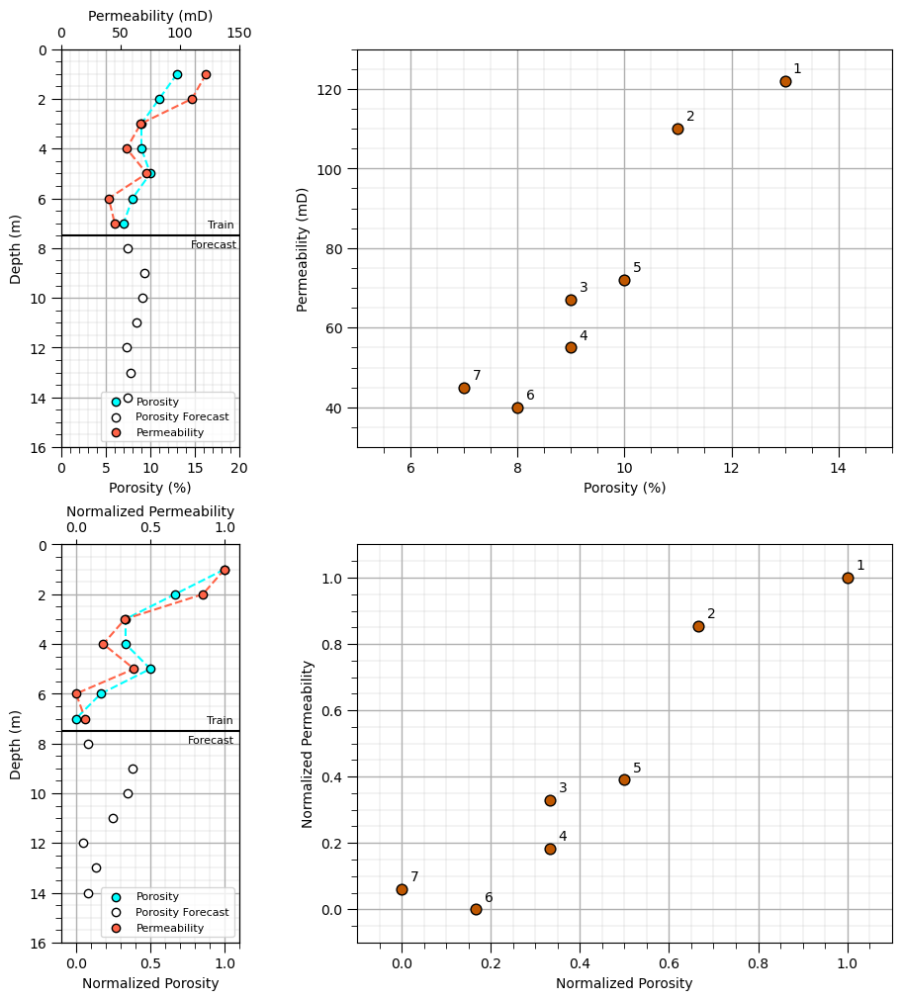
Train the Model#
Now that we have the LSTM functions and the training data, let’s train our model weights and biases.
params = initialize_lstm_weights(seed=42, scale=0.5) # initialize LSTM parameters
n_iterations = 100000; lr = 0.01 # training settings, number of iterations and learning rate
loss_history = [] # list to story loss over training epochs
for iteration in range(n_iterations):
(y_pred,h2,c2,f,i,c_tilde,o,a_f,a_i,a_c,a_o) = forward_pass(x, params) # forward pass
loss = mse_loss(y_pred, y); loss_history.append(loss) # calculate loss
grads = backward_pass(x, y, y_pred,h2, c2,f, i, c_tilde, o,a_f, a_i, a_c, a_o,params) # back propagation
params = update_weights(params, grads, lr=lr) # update model parameters
if iteration % 5000 == 0: # print progress
print(f"Iteration {iteration:5d} | Loss = {loss:.6f}")
Iteration 0 | Loss = 0.130618
Iteration 5000 | Loss = 0.012460
Iteration 10000 | Loss = 0.010685
Iteration 15000 | Loss = 0.009154
Iteration 20000 | Loss = 0.007752
Iteration 25000 | Loss = 0.006549
Iteration 30000 | Loss = 0.005569
Iteration 35000 | Loss = 0.004808
Iteration 40000 | Loss = 0.004226
Iteration 45000 | Loss = 0.003760
Iteration 50000 | Loss = 0.003367
Iteration 55000 | Loss = 0.003029
Iteration 60000 | Loss = 0.002742
Iteration 65000 | Loss = 0.002503
Iteration 70000 | Loss = 0.002310
Iteration 75000 | Loss = 0.002155
Iteration 80000 | Loss = 0.002034
Iteration 85000 | Loss = 0.001940
Iteration 90000 | Loss = 0.001867
Iteration 95000 | Loss = 0.001810
plt.figure(figsize=(10, 5)) # plot training loss vs. training epoch
iterations = np.arange(1, len(loss_history) + 1)
plt.plot(iterations, loss_history, color='salmon', linewidth=2)
plt.xlabel('Training Epoch'); plt.ylabel('Training Loss'); plt.title('LSTM Training Loss vs. Epoch')
plt.xlim(1, len(loss_history))
plt.gca().xaxis.set_major_formatter(FuncFormatter(lambda x, pos: f'{x:,.0f}'))
add_grid()
plt.tight_layout(); plt.show()
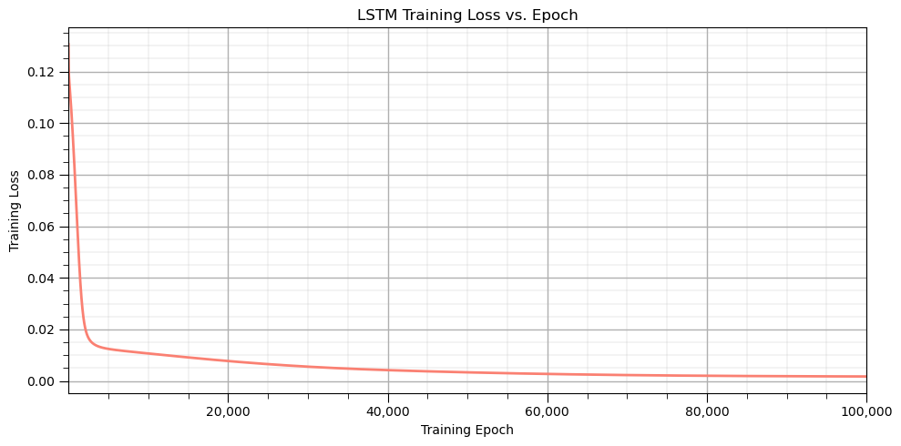
Checked Model Performance Over Training Data#
Let’s check the LSTM mode performance over the training data, 1 to 7 meter of depth. We have configured the forward pass to be quite diagnostic by writing out,
Depth - depth in meters, effectively the series index, \(t\)
NPorosity - predictor feature min/max normalized, \(x_t\)
f - forget gate strength, \(f_t\)
i - input gate strength, \(i_t\)
New info - candidate information to pass to long-term memory \(\tilde{c}_t\)
Up Info - updated long-term memory, \(c_t\)
o - output gate strength, \(o_t\)
h - hidden layer, \(h_t\)
Pred - prediction at \(t\), \(\hat{y}_t\)
(y_pred,h2,c2,f,i,c_tilde,o,a_f,a_i,a_c,a_o) = forward_pass(x, params) # predictions at depths 1-7
pred_perm = (y_pred * (permmax - permmin) + permmin) # convert normalized predictions back to original permeability units
print("Depth NPorosity f i New Info Up Info o h Pred") # display LSTM internal signals and predictions
print("------------------------------------------------------------------------------------------")
for t in range(len(x)):
print(
f"{depth[t]:5.0f}"
f"{x[t]:11.1f}"
f"{f[t]:7.3f}"
f"{i[t]:7.3f}"
f"{c_tilde[t]:12.3f}"
f"{c2[t]:11.3f}"
f"{o[t]:11.3f}"
f"{h2[t]:9.3f}"
f"{pred_perm[t]:12.1f}"
)
Depth NPorosity f i New Info Up Info o h Pred
------------------------------------------------------------------------------------------
1 1.0 0.445 0.854 0.631 0.539 0.507 0.250 121.8
2 0.7 0.476 0.826 0.007 0.262 0.627 0.161 110.9
3 0.3 0.453 0.808 -0.563 -0.336 0.656 -0.213 65.2
4 0.3 0.394 0.824 -0.489 -0.535 0.561 -0.275 57.6
5 0.5 0.388 0.836 -0.182 -0.360 0.517 -0.179 69.3
6 0.2 0.395 0.811 -0.706 -0.715 0.597 -0.366 46.3
7 0.0 0.362 0.808 -0.821 -0.923 0.575 -0.418 39.9
Now we can plot the training data and our LSTM predictions over the training data.
fig = plt.figure(figsize=(9, 5), constrained_layout=True) # figure and GridSpec
gs = fig.add_gridspec(nrows=1,ncols=2,width_ratios=[1, 3],wspace=0.1)
ax1 = fig.add_subplot(gs[0, 0]); ax3 = fig.add_subplot(gs[0, 1])
ax1.scatter(porosity,depth,color='aqua',edgecolor='black',label=r'$\phi_{train}$',zorder=10)
ax1.scatter(porosity_forecast,depth_forecast,color='white',edgecolor='black',label=r'$\phi_{forecast}$',zorder=10)
ax1.plot(porosity,depth,color='aqua',ls='--',zorder=1); add_grid2(ax1)
ax1.set_ylabel("Depth (m)"); ax1.set_xlabel('Porosity (%)'); ax1.set_xlim([0,20]);
ax2 = ax1.twiny() # second x-axis for permeability
ax2.scatter(permeability,depth,color='tomato',edgecolor='black',label=r'$K$',zorder=10)
ax2.plot(permeability,depth,color='tomato',ls='--',zorder=1)
ax2.set_xlabel('Permeability (mD)'); ax2.set_ylim([16,0]); ax2.set_xlim([0,150]);
ax2.plot(pred_perm,depth,color='black',ls='--',label=r'$\hat{K}$',zorder=100)
ax2.scatter(pred_perm,depth,color='black',s=10,zorder=100)
lines1, labels1 = ax1.get_legend_handles_labels(); lines2, labels2 = ax2.get_legend_handles_labels() # combine legends from both x-axes
ax1.legend(lines1 + lines2,labels1 + labels2,fontsize=8,loc='upper left')
ax1.plot([0,20],[7.5,7.5],color='black'); ax1.text(16.4,7.2,'Train',fontsize=8); ax1.text(14.5,8.0,'Forecast',fontsize=8)
ax3.set_title("Training Scatter Plot with Error")
ax3.scatter(porosity,permeability,color=color,edgecolor='black',s=60) # porosity vs. permeability scatter plot
ax3.scatter(porosity,pred_perm,color='white',edgecolor='black',s=60)
for t in range(len(x)):
ax3.plot([porosity[t],porosity[t]],[permeability[t],pred_perm[t]],color='grey',ls='--',zorder=0)
for p, k, d in zip(porosity, permeability, depth): # label points with depth
ax3.annotate(f'{d}',(p, k),xytext=(6, 6),textcoords='offset points')
ax3.set_xlabel('Porosity (%)'); ax3.set_ylabel('Permeability (mD)'); add_grid2(ax3)
ax3.set_xlim([5,15]); ax3.set_ylim([30,130])
(30.0, 130.0)
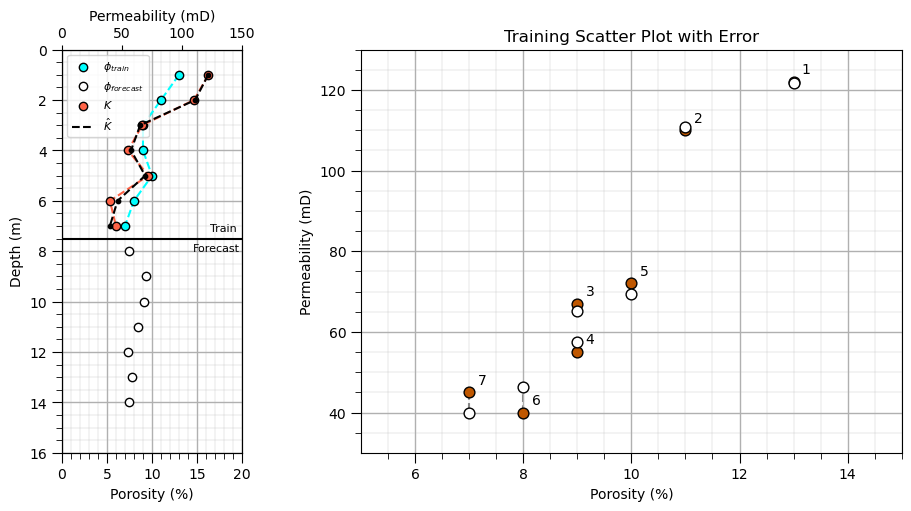
Checked Model Performance Over Testing Data#
Let’s check the LSTM mode performance over the training data, 1 to 7 meter of depth and testing data, 8 to 14 meters of depth. Once again, the forward pass is quite diagnostic and writes out,
Depth - depth in meters, effectively the series index, \(t\)
NPorosity - predictor feature min/max normalized, \(x_t\)
f - forget gate strength, \(f_t\)
i - input gate strength, \(i_t\)
New info - candidate information to pass to long-term memory \(\tilde{c}_t\)
Up Info - updated long-term memory, \(c_t\)
o - output gate strength, \(o_t\)
h - hidden layer, \(h_t\)
Pred - prediction at \(t\), \(\hat{y}_t\)
(y_pred_all,h2,c2,f,i,c_tilde,o,a_f,a_i,a_c,a_o) = forward_pass(x_all, params) # predictions at depths 1-7 + forecast forward
pred_perm_all = (y_pred_all * (permmax - permmin) + permmin) # convert normalized predictions back to original permeability units
print("Depth NPorosity f i New Info Up Info o h Pred") # display LSTM internal signals and predictions
print("------------------------------------------------------------------------------------------")
for t in range(len(x_all)):
print(
f"{depth_all[t]:5.0f}"
f"{x_all[t]:11.1f}"
f"{f[t]:7.3f}"
f"{i[t]:7.3f}"
f"{c_tilde[t]:12.3f}"
f"{c2[t]:11.3f}"
f"{o[t]:11.3f}"
f"{h2[t]:9.3f}"
f"{pred_perm_all[t]:12.1f}"
)
Depth NPorosity f i New Info Up Info o h Pred
------------------------------------------------------------------------------------------
1 1.0 0.445 0.854 0.631 0.539 0.507 0.250 121.8
2 0.7 0.476 0.826 0.007 0.262 0.627 0.161 110.9
3 0.3 0.453 0.808 -0.563 -0.336 0.656 -0.213 65.2
4 0.3 0.394 0.824 -0.489 -0.535 0.561 -0.275 57.6
5 0.5 0.388 0.836 -0.182 -0.360 0.517 -0.179 69.3
6 0.2 0.395 0.811 -0.706 -0.715 0.597 -0.366 46.3
7 0.0 0.362 0.808 -0.821 -0.923 0.575 -0.418 39.9
8 0.1 0.356 0.816 -0.753 -0.944 0.548 -0.404 41.8
9 0.4 0.366 0.834 -0.365 -0.650 0.502 -0.287 56.1
10 0.3 0.383 0.828 -0.447 -0.619 0.538 -0.296 54.9
11 0.2 0.379 0.822 -0.591 -0.720 0.552 -0.341 49.4
12 0.0 0.367 0.811 -0.789 -0.904 0.574 -0.412 40.7
13 0.1 0.358 0.819 -0.707 -0.903 0.541 -0.388 43.6
14 0.1 0.361 0.815 -0.757 -0.942 0.556 -0.409 41.1
Now we can plot the training data and testing data and our LSTM predictions over both.
fig = plt.figure(figsize=(9, 5), constrained_layout=True) # figure and GridSpec
suppress_warnings = True # toggle to supress warnings
gs = fig.add_gridspec(nrows=1,ncols=2,width_ratios=[1, 3],wspace=0.1)
ax1 = fig.add_subplot(gs[0, 0]); ax3 = fig.add_subplot(gs[0, 1])
ax1.scatter(porosity,depth,color='aqua',edgecolor='black',label=r'$\phi_{train}$',zorder=10)
ax1.scatter(porosity_forecast,depth_forecast,color='white',edgecolor='black',label=r'$\phi_{forecast}$',zorder=10)
ax1.plot(porosity,depth,color='aqua',ls='--',zorder=1); add_grid2(ax1)
ax1.set_ylabel("Depth (m)"); ax1.set_xlabel('Porosity (%)'); ax1.set_xlim([0,20]);
ax2 = ax1.twiny() # second x-axis for permeability
ax2.scatter(permeability,depth,color='tomato',edgecolor='black',label=r'$K$',zorder=10)
ax2.plot(permeability,depth,color='tomato',ls='--',zorder=1)
ax2.set_xlabel('Permeability (mD)'); ax2.set_ylim([16,0]); ax2.set_xlim([0,150]);
ax2.plot(pred_perm_all[:7],depth_all[:7],color='darkgrey',ls='--',label=r'$\hat{K}$',zorder=100)
ax2.scatter(pred_perm_all[:7],depth_all[:7],color='darkgrey',edgecolor='black',s=10,zorder=100)
ax2.plot(pred_perm_all[7:],depth_all[7:],color='darkred',ls='--',label=r'$\hat{K}_{forecast}$',zorder=100)
ax2.scatter(pred_perm_all[7:],depth_all[7:],color='darkred',edgecolor='black',s=10,zorder=100)
lines1, labels1 = ax1.get_legend_handles_labels(); lines2, labels2 = ax2.get_legend_handles_labels() # combine legends from both x-axes
ax1.legend(lines1 + lines2,labels1 + labels2,fontsize=8,loc='lower right')
ax1.plot([0,20],[7.5,7.5],color='black'); ax1.text(16.4,7.2,'Train',fontsize=8); ax1.text(14.5,8.0,'Forecast',fontsize=8)
ax3.set_title("Training and Forecast Scatter Plot")
ax3.scatter(porosity,permeability,color='tomato',edgecolor='black',s=60) # porosity vs. permeability scatter plot
ax3.scatter(porosity_all[:8],pred_perm_all[:8],color='darkgrey',edgecolor='black',s=60,label='train')
ax3.scatter(porosity_all[8:],pred_perm_all[8:],color='red',edgecolor='black',s=60,label='test')
for p, k, d in zip(porosity_all, pred_perm_all, depth_all): # label points with depth
ax3.annotate(f'{d}',(p, k),xytext=(6, 6),fontsize=7,color='grey',textcoords='offset points')
ax3.set_xlabel('Porosity (%)'); ax3.set_ylabel('Permeability (mD)'); add_grid2(ax3)
ax3.set_xlim([5,15]); ax3.set_ylim([30,130])
(30.0, 130.0)
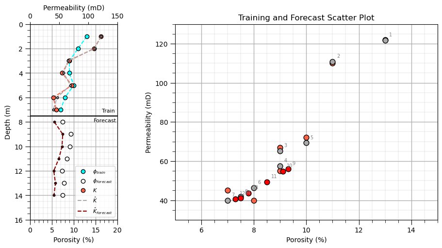
From the plots of depth versus training and forecast predictions (left) and permeability versus porosity for the training and forecast data (right), we can make the following observations about what our LSTM model learns:
The relationship between porosity and permeability - From the porosity and permeability scatter plot, we see that the forecast predictions at depths 8 to 14 fall within the region occupied by the training data, i.e., there are no implausible porosity and permeability combinations.
Continuity between predictions - There are no large jumps between consecutive permeability predictions along the sequence.
Now we can visualize the diagnostic output, information flow over all our predictions.
fig, axes = plt.subplots(1, 3,figsize=(15, 8),sharey=True,gridspec_kw={'width_ratios': [1.15, 1.15, 1]})
ax = axes[0] # porosity and predicted permeability
ax.plot(x_all,depth_all,'o-',color='#BF5700',label='Porosity')
ax.set_xlabel('Normalized Porosity'); ax.set_ylabel('Depth'); ax.invert_yaxis(); ax.grid(True, alpha=0.3)
ax_pred = ax.twiny() # prediction on second x-axis
ax_pred.plot(pred_perm_all,depth_all,'s--',color='black',label='Predicted Permeability')
ax_pred.set_xlabel('Predicted Permeability')
lines1, labels1 = ax.get_legend_handles_labels() # combined legend
lines2, labels2 = ax_pred.get_legend_handles_labels()
ax.legend(lines1 + lines2,labels1 + labels2,loc='lower right',fontsize=9)
ax = axes[1] # memory and hidden state
ax.plot(c_tilde,depth_all,'o--',label=r'Candidate $\tilde{c}_t$')
ax.plot(c2,depth_all,'s-',label=r'Cell $c_t$')
ax.plot(h2,depth_all,'^-',label=r'Hidden $h_t$')
ax.set_xlabel('Signal')
ax.grid(True, alpha=0.3)
ax.legend(fontsize=9,loc='lower right')
ax = axes[2] # gates
ax.plot(f,depth_all,'o-',label=r'Forget $f_t$')
ax.plot(i,depth_all,'s-',label=r'Input $i_t$')
ax.plot(o,depth_all,'^-',label=r'Output $o_t$')
ax.set_xlabel('Gate Strength'); ax.set_xlim(0, 1); ax.grid(True, alpha=0.3)
ax.legend(fontsize=9,loc='lower left')
for ax in axes: # train / forecast boundary
ax.axhline(7.5,linestyle=':',color='gray',linewidth=1.5)
axes[0].text(0.05,7.8,'Forecast',fontsize=9) # label forecast region
plt.show()
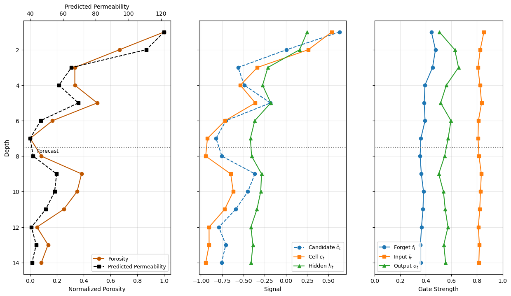
From these plots, we can observe how the internal components of our LSTM model change with depth:
Forget gate, \(f_t\) - the forget gate remains relatively low and stable, with values around 0.3 to 0.5. This indicates that the model retains only a fraction of the previous cell state at each time step.
Input gate, \(i_t\) - the input gate remains relatively high, with values around 0.7 to 0.9. This indicates that the model allows substantial new information to contribute to the cell state.
Candidate new information, \(\tilde{c}_t\) - the candidate new information varies along the sequence, representing new information calculated from the current input and previous hidden state.
Updated long-term memory, \(c_t\) - the cell state changes with depth as retained memory and new information are combined. Its variation reflects the accumulated effect of the forget and input gates across the sequence.
Hidden state, \(h_t\) - the hidden state varies along the sequence and represents the information exposed by the output gate from the activated cell state. It provides the short-term representation used to calculate the permeability prediction.
Together, these plots illustrate how the LSTM selectively retains previous information, incorporates new information, and produces a depth-dependent hidden representation for permeability prediction.
About the Author#

Michael Pyrcz is a professor in the Cockrell School of Engineering, and the Jackson School of Geosciences, at The University of Texas at Austin, where he researches and teaches subsurface, spatial data analytics, geostatistics, and machine learning. Michael is also,
the principal investigator of the Energy Analytics freshmen research initiative and a core faculty in the Machine Learn Laboratory in the College of Natural Sciences, The University of Texas at Austin
an associate editor for Computers and Geosciences, and a board member for Mathematical Geosciences, the International Association for Mathematical Geosciences.
Michael has written over 100 peer-reviewed publications, a Python package for spatial data analytics, co-authored a textbook on spatial data analytics, Geostatistical Reservoir Modeling and author of two recently released e-books, Applied Geostatistics in Python: a Hands-on Guide with GeostatsPy and Applied Machine Learning in Python: a Hands-on Guide with Code.
All of Michael’s university lectures are available on his YouTube Channel with links to 100s of Python interactive dashboards and well-documented workflows in over 40 repositories on his GitHub account, to support any interested students and working professionals with evergreen content. To find out more about Michael’s work and shared educational resources visit his Website.
Want to Work Together?#
I hope this content is helpful to those that want to learn more about subsurface modeling, data analytics and machine learning. Students and working professionals are welcome to participate.
Want to invite me to visit your company for training, mentoring, project review, workflow design and / or consulting? I’d be happy to drop by and work with you!
Interested in partnering, supporting my graduate student research or my Subsurface Data Analytics and Machine Learning consortium (co-PI is Professor John Foster)? My research combines data analytics, stochastic modeling and machine learning theory with practice to develop novel methods and workflows to add value. We are solving challenging subsurface problems!
I can be reached at mpyrcz@austin.utexas.edu.
I’m always happy to discuss,
Michael
Michael Pyrcz, Ph.D., P.Eng. Professor, Cockrell School of Engineering and The Jackson School of Geosciences, The University of Texas at Austin
More Resources Available at: Twitter | GitHub | Website | GoogleScholar | Geostatistics Book | YouTube | Applied Geostats in Python e-book | Applied Machine Learning in Python e-book | LinkedIn
Comments#
This was a basic treatment of long short-term memory networks based on recurrent neural networks. Much more could be done and discussed, I have many more resources. Check out my shared resource inventory and the YouTube lecture links at the start of this chapter with resource links in the videos’ descriptions.
I hope this is helpful,
Michael